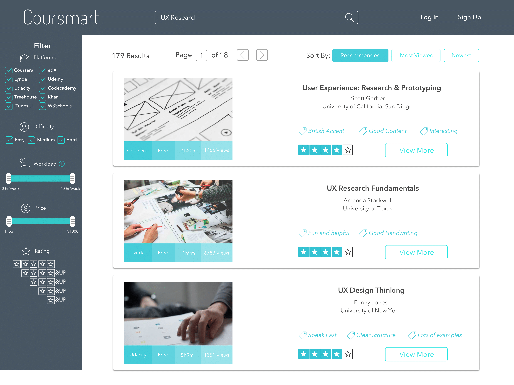
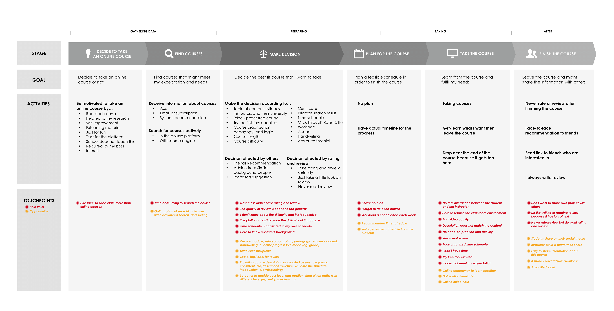
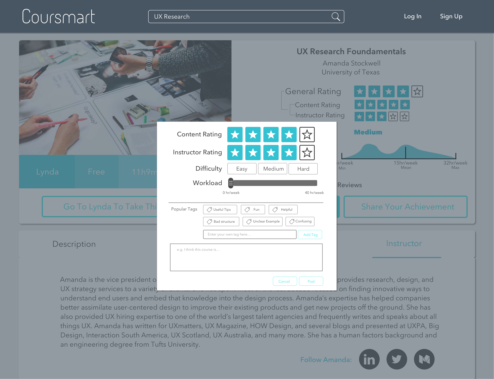
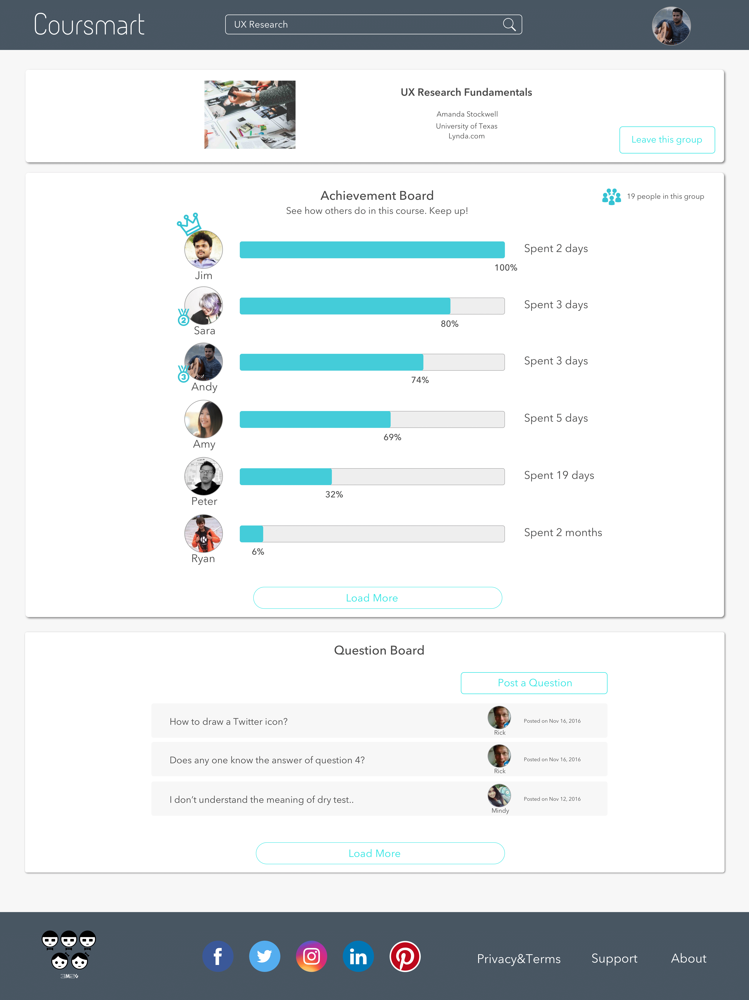

This was originally a final project of the class INF 385T Interaction Design taught by Fleming Seay at UT Austin. My team also includes Chu-Ting Fan, Xiaoyue Pang, Chen-Chun Shen, and Zhenzhi Zhu. The high-fidelity prototype can be found here.
MOOCs, the acronym for Massive Open Online Courses, have been heralded as the next big revolution in higher education. They are transforming the educational landscape, with already millions of people enrolled across hundreds of courses from top institutions through various provider platforms (e.g., university consortiums Coursera and edX). Regardless of where you live, your background and level of expertise, if you are interested in expanding your knowledge with online courses, MOOCs are the best places to go. With hundreds of new courses coming online every year and little or no feedback about their quality, the issue of how to find the courses which are right for an online learner taking into account his/her schedule, interests, and long-term career aims becomes pressing. For instance, from the description, the course might sound to be a practical course but after going through 2 or 3 modules, you find out it is a theoretical one. In order to save several hours for online learners to discover whether the courses are designed for them, we decided to design and prototype a crowdsourced online course review platform.
In our user research phase, we conducted 5 contextual interviews to gather qualitative data from the online learners. After the first round contextual interview we found more questions that we wanted to get answered, so we did a second round in-depth interview with other 16 online learners to collect more data. From the quantitative side, we distributed survey on Qualtrics and ended up getting 76 valid responses. In order to make data meaningful, we did data visualization and analysis for our survey results and affinity diagram on qualitative data we collected.

We generated a user journey map from our data collection and pointed out the overall stages that a user would go through from the start of taking an online course to the end of their session, and we fragmented the linear process into six stages: decide to take an online course, find course, make decision, plan for the course, take the course, and finish and share. The goal for each stage explained what users want or try to achieve. The activities showed what users do in this stages, we prioritized them in the order of their mentioned time from our collected data. Touchpoints specified what users are having while in this stage, and what we can do to improve the experience. The opportunities in yellow could be deemed as our preliminary design ideas in order to solve the specific pain points that presented with red dots.
From our research data, we found several pain points of online learning experience: There is no clear clue of the difficulty from the course description; Course reviews are too general to be helpful; Online learners tend to drop the class as the course does not meet their expectation. Given user behavioral needs and pain points, we decided to make the best of reviews to find most suitable courses, build a community to motivate interest, and offer a way to manage all the enrolled courses.
We created four versions of prototype in the prototyping and implementation stages. The design of the first version was based on the user research results, and the following versions were created or modified according to results of user testing on the previous version. The tools we mainly used are Balsamiq, Marvel App, Sketch, InVision, and Adobe Photoshop.

Reviews speed up the decision making process. Users can filter search result by reviews as well as find helpful reviews by matching their background to that of reviewers, determining whether the course meets their needs. To leave a review for an online course, users can rate its content and instructor separately, estimate its difficulty and workload, choose others’ tags or/and create their own tags for this course.

Learning online can be a lonely process. We sit with the computer, working for the most part in a quarantined digital island, unaware of our peers and our struggles in the course. For each course, Coursmart connects online students and creates a vibrant learning community: students can see all the learning progress of their classmates, post questions, and answer others’ questions.
During the design process, we redesigned for a certain element several times. We had a hard time to decide how to design it, even though it seemed to be a very simple element, such as the filer for ratings. We first tried to use scroll bars and only one row of star boxes to provide the filter interaction. We thought the design solutions we came up with were neat and novel, however neither of these worked. Users failed the task of interacting with this filter during usability testings. At the end, we sacrificed the visual appeal of these two design, and went for the common design, which was proved to be usable.